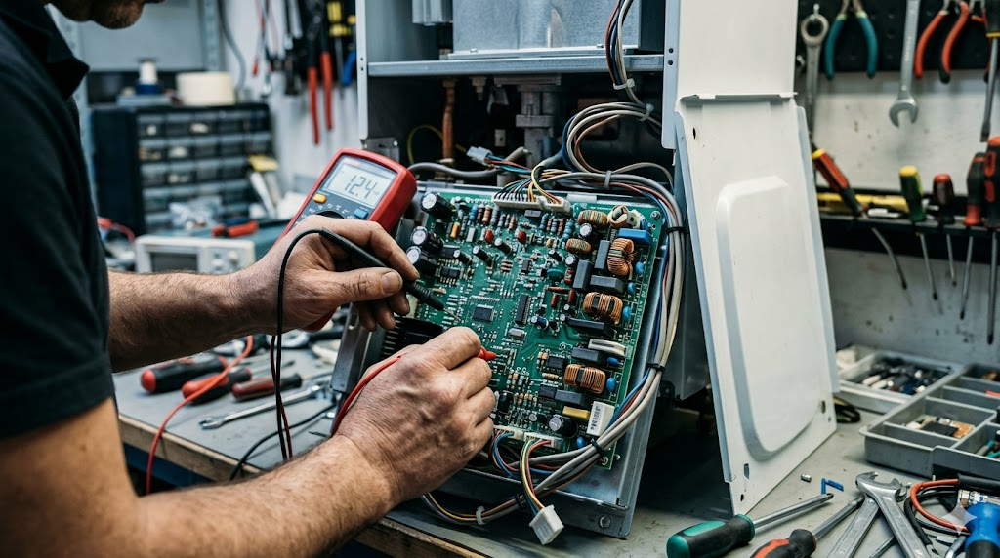
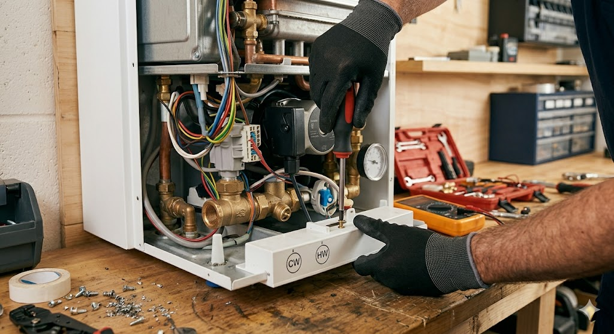

<section class="section" style="padding-top:120px;" aria-label="Услуги">
                <div class="container">
                    <h2 class="section-title" data-i18n="page.services.title">Наши услуги</h2>
                    <p class="section-subtitle" data-i18n="page.services.subtitle">Профессиональный сервис и ремонт всех видов бытовой техники.</p>

                    <div style="display:grid;grid-template-columns:1fr 300px;gap:30px;">
                        <div>
                            <!-- Кондиционеры Detail -->
                            <article class="service-card fade-in" style="margin-bottom:30px;">
                                <div class="service-card-media">
                                    
                                </div>
                                <div class="service-card-body">
                                <div class="service-icon blue">
                                    <i class="fas fa-snowflake"></i>
                                </div>
                                <h3 data-i18n="svc.ac.title">Ремонт и установка кондиционеров</h3>
                                <p data-i18n="svc.ac.detail.desc">Команда TeknoSoHome профессионально выполняет установку, ремонт, техническое обслуживание и заправку фреоном кондиционеров всех марок и моделей. Наши мастера по кондиционерам имеют многолетний опыт.</p>
                                <ul class="service-list">
                                    <li><i class="fas fa-check-circle"></i> <span data-i18n="svc.ac.detail.l1" data-i18n-html><strong>Заправка фреоном</strong> – Если ваш кондиционер плохо охлаждает, проверяется уровень фреона и при необходимости заполняется.</span></li>
                                    <li><i class="fas fa-check-circle"></i> <span data-i18n="svc.ac.detail.l2" data-i18n-html><strong>Диагностика</strong> – Полная техническая проверка и выявление неисправностей.</span></li>
                                    <li><i class="fas fa-check-circle"></i> <span data-i18n="svc.ac.detail.l3" data-i18n-html><strong>Чистка</strong> – Глубокая чистка фильтров и внутренних компонентов.</span></li>
                                    <li><i class="fas fa-check-circle"></i> <span data-i18n="svc.ac.detail.l4" data-i18n-html><strong>Ремонт</strong> – Ремонт кондиционеров любой сложности.</span></li>
                                    <li><i class="fas fa-check-circle"></i> <span data-i18n="svc.ac.detail.l5" data-i18n-html><strong>Установка</strong> – Профессиональная установка сплит-систем.</span></li>
                                    <li><i class="fas fa-check-circle"></i> <span data-i18n="svc.ac.detail.l6" data-i18n-html><strong>Демонтаж</strong> – Безопасный демонтаж и перенос в другое место.</span></li>
                                </ul>
                                <div class="service-keywords">
                                    <span>ремонт кондиционеров</span>
                                    <span>установка кондиционеров</span>
                                    <span>мастер по кондиционерам</span>
                                    <span>заправка фреоном</span>
                                    <span>кондиционер сервис</span>
                                    <span>кондиционер ustası</span>
                                </div>
                                </div>
                            </article>

                            <!-- Котлы Detail -->
                            <article class="service-card fade-in" style="margin-bottom:30px;">
                                <div class="service-card-media">
                                    
                                </div>
                                <div class="service-card-body">
                                <div class="service-icon green">
                                    <i class="fas fa-fire"></i>
                                </div>
                                <h3 data-i18n="svc.boiler.title">Ремонт и обслуживание котлов</h3>
                                <p data-i18n="svc.boiler.detail.desc">Для эффективной работы котельных систем необходимо регулярное техническое обслуживание. Команда мастеров по котлам TeknoSoHome выполняет диагностику, ремонт и профилактическое обслуживание котлов всех марок.</p>
                                <a href="services.html" class="btn btn-outline" style="margin-top:12px;display:inline-flex;"><i class="fas fa-arrow-right"></i> Kombi Servisi</a>
                                <ul class="service-list">
                                    <li><i class="fas fa-check-circle"></i> <span data-i18n="svc.boiler.detail.l1" data-i18n-html><strong>Диагностика</strong> – Точное определение проблем в котельной системе.</span></li>
                                    <li><i class="fas fa-check-circle"></i> <span data-i18n="svc.boiler.detail.l2" data-i18n-html><strong>Замена запчастей</strong> – Замена на оригинальные запчасти.</span></li>
                                    <li><i class="fas fa-check-circle"></i> <span data-i18n="svc.boiler.detail.l3" data-i18n-html><strong>Срочный ремонт</strong> – Быстрая реакция и срочный ремонт котлов в зимние месяцы.</span></li>
                                    <li><i class="fas fa-check-circle"></i> <span data-i18n="svc.boiler.detail.l4" data-i18n-html><strong>Профилактическое обслуживание</strong> – Сезонное техническое обслуживание и чистка.</span></li>
                                </ul>
                                <div class="service-keywords">
                                    <span>ремонт котлов</span>
                                    <span>сервис котлов</span>
                                    <span>мастер по котлам</span>
                                    <span>обслуживание котлов</span>
                                    <span>ремонт котлов баку</span>
                                </div>
                                </div>
                            </article>

                            <!-- Стиральные машины Detail -->
                            <article class="service-card fade-in" style="margin-bottom:30px;">
                                <div class="service-card-media service-card-media--placeholder">
                                    <i class="fas fa-tshirt"></i>
                                    <span data-i18n="svc.wm.photo.soon">Фото скоро будет добавлено</span>
                                </div>
                                <div class="service-card-body">
                                <div class="service-icon purple">
                                    <i class="fas fa-tshirt"></i>
                                </div>
                                <h3 data-i18n="svc.wm.title">Ремонт стиральных машин</h3>
                                <p data-i18n="svc.wm.detail.desc">Мы предоставляем профессиональный сервис по ремонту стиральных машин при любых неисправностях. От ремонта электронной платы до замены двигателя – выполняем все виды работ.</p>
                                <ul class="service-list">
                                    <li><i class="fas fa-check-circle"></i> <span data-i18n="svc.wm.detail.l1" data-i18n-html><strong>Ремонт электронной платы</strong> – Ремонт панели управления и электроники.</span></li>
                                    <li><i class="fas fa-check-circle"></i> <span data-i18n="svc.wm.detail.l2" data-i18n-html><strong>Ремонт двигателя</strong> – Устранение неисправностей мотора.</span></li>
                                    <li><i class="fas fa-check-circle"></i> <span data-i18n="svc.wm.detail.l3" data-i18n-html><strong>Замена насоса</strong> – Проверка и замена водяного насоса.</span></li>
                                    <li><i class="fas fa-check-circle"></i> <span data-i18n="svc.wm.detail.l4" data-i18n-html><strong>Полная диагностика</strong> – Полная техническая проверка и отчёт.</span></li>
                                </ul>
                                <div class="service-keywords">
                                    <span>ремонт стиральных машин</span>
                                    <span>сервис стиральных машин</span>
                                    <span>стиральная машина ремонт</span>
                                    <span>ремонт бытовой техники</span>
                                </div>
                                </div>
                            </article>

                            <!-- Бытовая техника General -->
                            <article class="service-card fade-in">
                                <div class="service-card-media">
                                    
                                </div>
                                <div class="service-card-body">
                                <div class="service-icon blue">
                                    <i class="fas fa-wrench"></i>
                                </div>
                                <h3 data-i18n="svc.general.title">Ремонт бытовой техники</h3>
                                <p data-i18n="svc.general.desc">TeknoSoHome предлагает ремонт и сервисное обслуживание всех видов бытовой техники.</p>
                                <div class="service-keywords">
                                    <span>ремонт бытовой техники</span>
                                    <span>сервис бытовой техники</span>
                                    <span>ремонт холодильников</span>
                                    <span>ремонт посудомоечных машин</span>
                                </div>
                                </div>
                            </article>
                        </div>

                        <!-- Sidebar -->
                        <aside>
                            <div class="ad-space ad-space-sidebar">
                                <span data-i18n="ad.sidebar">Yandex Direct Рекламное место (300x250)</span>
                            </div>
                            <div style="background:var(--primary);color:var(--white);border-radius:var(--radius-lg);padding:28px;margin-top:20px;text-align:center;">
                                <i class="fas fa-phone-volume" style="font-size:2rem;margin-bottom:12px;"></i>
                                <h3 style="font-size:1.1rem;margin-bottom:8px;" data-i18n="page.services.consult">Бесплатная консультация</h3>
                                <p style="font-size:0.9rem;opacity:0.9;margin-bottom:16px;" data-i18n="page.services.consult.desc">Есть вопросы о сервисных услугах?</p>
                                <a href="tel:+994552467477" class="btn btn-secondary" style="width:100%;justify-content:center;">
                                    <i class="fas fa-phone"></i> <span data-i18n="nav.call">Позвонить</span>
                                </a>
                            </div>
                            <div class="ad-space ad-space-sidebar" style="margin-top:20px;">
                                <span data-i18n="ad.sidebar2">Google AdSense Рекламное место (300x250)</span>
                            </div>
                        </aside>
                    </div>
                </div>
            </section>
